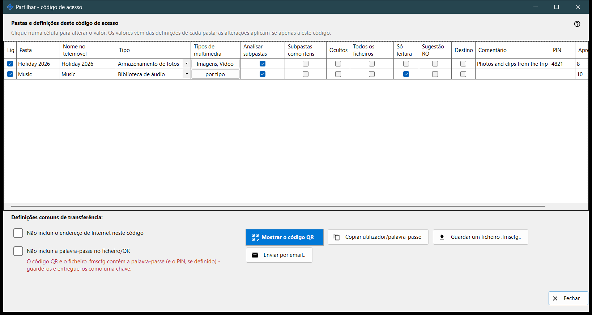
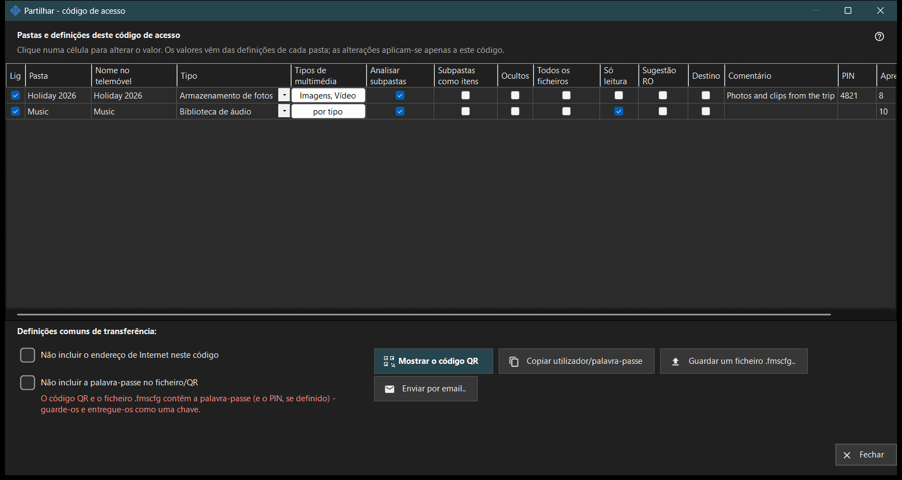

Partilhar - código de acesso
Finalidade
Cria o código de acesso para um telemóvel: um código QR e um ficheiro .fmscfg que contêm o endereço, o utilizador e as pastas escolhidas. Abre-se a partir do botão «Partilhar» da janela principal enquanto a partilha está ativa e, antes de entregar o código, verifica se o telemóvel consegue mesmo chegar ao PC.


Nesta ordem
- Marque as pastas a incluir no código.
- Edite qualquer célula da tabela que deva ser diferente neste código.
- Se for preciso, marque «Não incluir o endereço de Internet neste código» ou «Não incluir a palavra-passe no ficheiro/QR».
- Aguarde a verificação do acesso.
- Mostre o código QR, guarde o ficheiro .fmscfg, envie-o por email ou copie o utilizador e a palavra-passe.
Os elementos
Pastas e definições para este código de acesso
Uma linha por pasta partilhada, com as colunas Lig, Pasta, Nome no telemóvel, Tipo, Tipos de multimédia, Analisar subpastas, Subpastas como itens, Ocultos, Só leitura, Sugestão RO, Destino, Comentário e Apresentação, s. Clique numa célula para a alterar. Os valores partem das definições de cada pasta e as edições só valem para este código. «Só leitura» é um bloqueio real no servidor; «Sugestão RO» apenas esconde os botões de edição na aplicação. Uma pasta de destino admite sempre escrita, por isso «Só leitura» não se aplica a ela.
Definições de transferência comuns
«Não incluir o endereço de Internet neste código» faz com que o telemóvel se ligue apenas pela rede local; não desliga o servidor, e o acesso pela internet para toda a partilha fecha-se nas definições do gestor. «Não incluir a palavra-passe no ficheiro/QR» retira a palavra-passe do código; entregue-a em separado. A aceitação de um código sem palavra-passe pelo telemóvel depende da versão da aplicação.
Verificação do acesso
Enquanto o estado é obtido, a janela indica-o. Se o servidor não estiver a funcionar, se nenhuma pasta estiver marcada ou se não houver um endereço utilizável, uma sugestão diz o que falta. Quando a verificação não termina, o código e o ficheiro não são entregues: prima «Verificar o acesso novamente».
Mostrar o código QR
O código QR e o ficheiro .fmscfg abrem o acesso às pastas e contêm a palavra-passe e o PIN, se estiver definido: guarde-os e entregue-os como uma chave. Se as definições forem demasiado grandes para um código QR, guarde o ficheiro e envie-o em vez disso.
Ficheiro, email e utilizador
«Guardar um ficheiro .fmscfg..» grava o ficheiro; num sistema de ficheiros que não pode restringir o acesso, ou numa pasta que outros podem alterar, a janela recusa, porque o ficheiro contém uma chave de acesso. «Enviar por email..» anexa o ficheiro com uma nota para o importar na aplicação Android e depois o eliminar. «Copiar utilizador/palavra-passe» coloca ambos na área de transferência.
Definições do gestor · Definições de partilha SFTP · Definições do servidor de troca